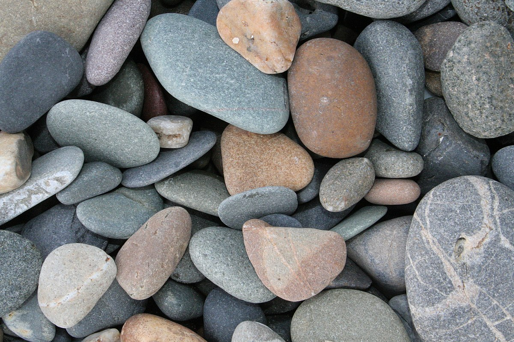

SOMELIER DI SASSI
Hai un senso del gusto molto sviluppato?
Una passione per la Mineralogia?
Cerchi un lavoro che ti garantisca uno stipendio lauto?
Se la risposta è si, allora questo è il lavoro che fa per te.
I sassi,o in generale le rocce, sono agglomerati di minerali che da sempre occupano i verrici della nostra catena alimentare.
I sassi sono uno fra gli alimenti più costosi, esclusivi e ricercati.
Fin dall’antichità sono stato alimento esclusivo delle classi altolocate.
Ora, grazie al benessere generale, e alla società consumistica, sono accessibili alla maggioranza della popolazione, ma rimangono comunque un alimento pregiato.
Il somelier di sassi è una figura professionale estremamente rara da trovare, ma quanto mai proficua.
Il suo lavoro consiste nell’assaggiare rocciose prelibatezze, per verificare la loro qualità, origine e composizione, e accertare che il suddetto sasso sia smerciabile come materia prima per la preparazione di succulente leccornie nei migliori ristoranti
Lo stipendio di un somelier di sassi varia dai 2.500€ mensili per un assaggiatore impiegato per il controllo di materie per la produzione industriale, ai 10.000€ e oltre di chi fa l’assaggiatore per i ristoranti stellati.
Clicca qui
per acquistare il nostro corso su “Come affinare il tuo palato”
